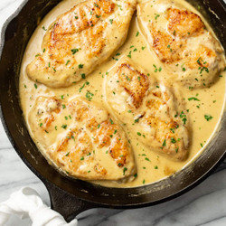

Honey Mustard Chicken

Description
A sweet and savory chicken recipe that is guaranteed to be the only recipe you will ever make again.
The chicken dish will melt-in-your-mouth and it's quick and easy!
Ingredients
- 2 large chicken breasts
- Salt and pepper
- Garlic powder
- Flour (for dredging)
- Olive oil
- Chicken broth
- Butter
- Dijon mustard
- Honey
- Heavy whipping cream
Cooking Directions
- Prepare your chicken (cut it in half lengthwise so you have 4 smaller cutlets). Sprinkle them with the garlic powder and salt & pepper and then coat them in the flour.
- Heat the olive oil and one tablespoon of the butter in a skillet over medium-high heat.
- Once the pan is hot, add the chicken pieces and cook them for 4-5 minutes/side or until they're golden. If the oil starts to splatter a lot, reduce the heat. Once the chicken is browned, take it out of the pan and set it aside.
- Take the pan off the heat and add the rest of the butter, the chicken broth, Dijon mustard, and the honey.
- Return the pan to the stove and adjust the heat to medium. Stir the sauce until the mustard has dissolved (make sure the liquid doesn't reduce completely).
- Add the cream. Once the sauce is bubbling again, add the chicken back in. Let it cook for 5 minutes or until the chicken is cooked through and the sauce is reduced to your liking.